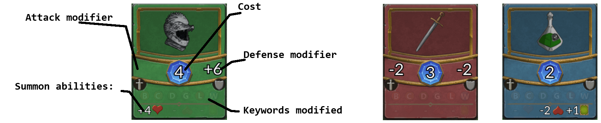

Cards
Creatures
There are 6 keywords:
- Breakthrough: deal excess damage to the opponent.
- Charge: can attack the same turn it is summoned.
- Drain: when attacking, heals the player when doing damage.
- Guard: must be attacked first.
- Lethal: kills any creature it damages.
- Ward: prevent first damage to the creature.
And 3 possible additional abilities:
- Modify player's health.
- Modify opponent's health.
- Increase number of cards player draws next turn.
Items

There are 3 types of items:
- Green: which can be used on the player's creatures - they usually increase their stats and/or add keywords.
- Red: which can be used on the opponent's creatures - they usually reduce their stats and/or remove keywords.
- Blue: which can be used on the opponent's creatures or directly on the opponent.
List of Cards
Draft Phase
During the draft phase (first 30 turns) player constructs their decks by choosing one of the three proposed cards each turn. The choices of the opponent are unknown.
Battle Phase
During the battle phase (all remaining turns), both player takes their turns alternatively, red first. During its turn the player can do any number of the following action types (asumming the actions are legal):
- Summon a creature from the hand to the chosen lane of the board (which costs mana).
- Use an item on an appropriate target (friendly creature, opponent's creature, or the opponent itself), which also costs mana.
- Make friendly creature on board attack opponent creature on the same lane or the opponent (which is free).
Cards which are legal to play from the hand depend on the actual amount of mana points, which restores to the maximum at the beginning of every turn. This maximum increases each turn up to 12. Second player has one bonus mana point that he can spend at any turn.
At the beginning of each turn, the current player draws cards from the deck (usually one) if his hand is not full (8 cards max). The content of the hand is visible only to the hand's owner. Content of the board and player data (health, mana, etc.) is visible to everyone.
Each creature can only attack once per turn and (unless it has the charge keyword) it cannot attack the same turn it is placed.
When creature attacks other creature both defenses are reduced by opponent's attack values. Creatures with defense 0 or less are immediately removed from the board. When creature directly attacks the player, its attack is substracted from the player's health.
The goal of the game is to reduce opponent's health to 0.